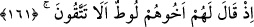
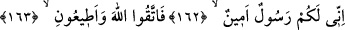
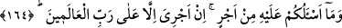

174. Elbet bunda büyük bir ibret vardır; fakat çokları iman etmezler.
175. Şüphesiz Rabbin, işte O, mutlak galip ve engin merhamet sahibidir.
“Lût kavmi” yâni Sodom ve ona bağlı yerlerin halkı “da peygamberleri” yâni Lût ve
İbrâhim (a.s.) ile onlardan önce gönderilen peygamberleri “yalancılıkla suçladı.”
161. Kardeşleri Lût onlara şöyle demişti: (Allah’a karşı gelmekten) sakınmaz
mısınız?
“Kardeşleri Lût onlara şöyle demişti:”
Kâşifî: “Burada kasdedilen şefkat kardeşliğidir.” der. Çünkü Lût (a.s.) onların
nesebinden değildi. Onlara göre yabancıydı. Çünkü rivâyete göre o, amcası İbrâhim
(a.s.) ile Şam diyarına hicret etti. İbrahim (a.s.) onu Ürdün civarına yerleştirdi. Allah
Lût (a.s.)’ı Sodom halkına peygamber gönderdi.
Lût (a.s.) Hârân’ın oğludur. Hârân ise İbrâhim (a.s.)’ın babası Târah’ın kardeşidir.
“(Allah’a karşı gelmekten) sakınmaz mısınız?” Bu şirk ve günahlardan ötürü
Allah’ın azâbından korkmaz mısınız.
162-163. Bilin ki, ben size gönderilmiş güvenilir bir elçiyim. Artık Allah’a karşı
gelmekten sakının ve bana itaat edin.
“Bilin ki, ben size” Hak Teâlâ tarafından “gönderilmiş güvenilir” güvenilirliği ile
tanınan ve herkes tarafından îtimad edilen “bir elçiyim.” Çünkü güvenilen kimsenin
sözüne itimâd edilir.
164. Buna karşı sizden hiçbir ücret istemiyorum. Benim ecrimi verecek olan,
ancak âlemlerin Rabbidir.
“Buna karşı” yâni tebliğ ve ta’limden dolayı “sizden hiçbir ücret” dünyevî bir